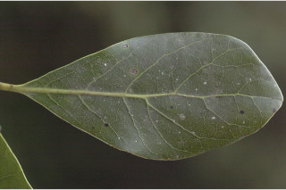
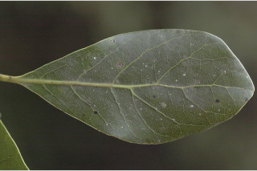
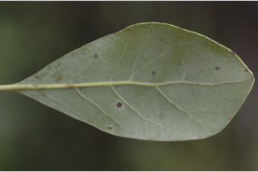
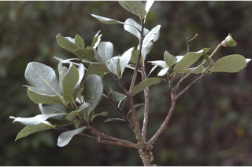
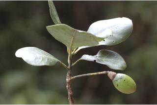
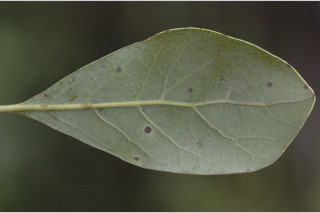
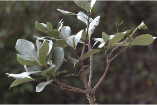
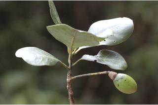

Trees up to 8 m tall.
8 ಮೀ.ವರೆವಿಗೆ ಬೆಳೆಯುವ ಮರಗಳು.
8 മീറ്റര് വരെ ഉയരമുളള മരങ്ങള്.
மரங்கள் 8 மீ உயரம் வரை வளரக்கூடியது.
Bark grey, fissured blaze white with orange speckles
ತೊಗಟೆ ಬೂದು ಬಣ್ಣದಲ್ಲಿರುತ್ತದೆ ಸೀಳಿಕಾ ಮಾದರಿಯಲ್ಲಿರುತ್ತದೆ; ಕಚ್ಚು ಮಾಡಿದ ಜಾಗ ಬಿಳಿ ಬಣ್ಣದಲ್ಲಿದ್ದು ಕಿತ್ತಳೆ ಬಣ್ಣದ ಮಚ್ಚೆಗಳನ್ನು ಹೊಂದಿರುತ್ತದೆ.
വിണ്ടുകീറിയ, ചാര നിറത്തിലുളള പുറംതൊലി; വെട്ട്പാടിന് ഓറഞ്ച് കുത്തുകളുളള വെളുപ്പുനിറം.
மரத்தின் பட்டை சாம்பல் நிறமானது, வெடிப்புகளுடையது; உள்பட்டை வெள்ளை மற்றும் ஆரஞ்ச் நிற புள்ளிகளுடையது.
Branchlets subterete, lenticellate, glabrous
ಕಿರುಕೊಂಬೆಗಳು ಉಪ-ದುಂಡಾಕಾರದಲ್ಲಿದ್ದು ವಾಯುವಿನಿಮಯ ಬೆಂಡು ರಂಧ್ರಗಳ ಸಮೇತವಿದ್ದು ರೋಮರಹಿತವಾಗಿರುತ್ತವೆ.
ശ്വസനരന്ധ്രങ്ങളുളള, അരോമിലമായ, ഏതാണ്ട് ഉരുണ്ടിരിക്കുന്ന ഉപശാഖകള്.
சிறியநுனிக்கிளைகள் குறுக்குவெட்டுத் தோற்றத்தில் வட்டம் போன்றது, லெண்டிசெல்லேட் (பட்டைத்துளைகள்) கொண்டது, உரோமங்களற்றது.
Leaves simple, alternate, spiral, clustered at twig ends; petiole 0.5-2 cm long,
planoconvex in cross section, glabrous; lamina 4-11 x 2-4 cm, obovate, apex obtuse or rounded, base cuneate
to acute, margin entire, coriaceous, glabrous, glaucous beneath; midrib slightly raised above; secondary_nerves 6-9 pairs;
tertiary_nerves reticulo-percurrent.
ಎಲೆಗಳು ಸರಳವಾಗಿದ್ದು,ಪರ್ಯಾಯ ಮತ್ತು ಸುತ್ತು ಜೋಡನಾ ವ್ಯವಸ್ಥೆಯಲ್ಲಿದ್ದು ಕುಡಿಕೊಂಬೆಗಳ ತುದಿಯಲ್ಲಿರುತ್ತವೆ; ತೊಟ್ಟುಗಳು 0.5- 2 ಸೆಂ.ಮೀ. ವರೆಗಿನ ಉದ್ದ ಹೊಂದಿದ್ದು ಅಡ್ಡ ಸೀಳಿದಾಗ ಸಪಾಟ ಪೀನ ಮಧ್ಯದ ಆಕಾರದಲ್ಲಿರುತ್ತವೆ ಮತ್ತು ರೋಮರಹಿತವಾಗಿರುತ್ತವೆ; ಪತ್ರಗಳು 4-11 ´ 2-4 ಸೆಂ.ಮೀ ಗಾತ್ರ ಹೊಂದಿದ್ದು ಬುಗುರಿಯ ಆಕಾರದಲ್ಲಿರುತ್ತವೆ. ಪತ್ರದ ತುದಿ ಚೂಪಲ್ಲದ ಅಥವಾ ದುಂಡಾಗಿರುವ ಮಾದರಿಯಲ್ಲಿರುತ್ತದೆ, ಬುಡ ಬೆಣೆಯಾಕಾರದಿಂದ ಚೂಪಾದ ಮಾದರಿಯಲ್ಲಿರುತ್ತದೆ; ಅಂಚು ನಯವಾಗಿರುತ್ತದೆ;ಪತ್ರಗಳ ಮೇಲ್ಮೈತೊಗಲನ್ನೋಲುವ ಮಾದರಿಯಲ್ಲಿದ್ದು ರೋಮರಹಿತವಾಗಿರುತ್ತದೆ ಮತ್ತು ತಳಭಾಗದಲ್ಲಿ ಮಾಸಲು ಬೂದು ಹಸಿರು ಬಣ್ಣ ಹೊಂದಿರುತ್ತದೆ;ಮಧ್ಯನಾಳ ಪತ್ರದ ಮೇಲ್ಭಾಗದಲ್ಲಿ ತುಸು ಮೇಲೆದ್ದಿರುತ್ತದೆ; ಎರಡನೇ ದರ್ಜೆಯ ನಾಳಗಳು 6-9 ಜೋಡಿಗಳಿದ್ದು ಕವಲೊಡೆದಿರುತ್ತವೆ ಮತ್ತು ಆರೋಹಣ ಮಾದರಿಯಲ್ಲಿರುತ್ತವೆ.ಮೂರನೇ ದರ್ಜೆಯ ನಾಳಗಳು ಜಾಲಬಂಧ ನಾಳ ವಿನ್ಯಾಸ ಹೊಂದಿದ್ದು ಎಲೆದಿಂಡಿಗೆ ಅಡ್ಡವಾಗಿ ಕೂಡುವ ರೀತಿಯವು.
ലഘുവായ ഇലകള്, ഏകാന്തര ക്രമത്തില്, സര്പ്പിളമായ, തണ്ടിന്റെ അറ്റത്തായടുക്കിയ വിധത്തിലാണ്; ഛേദത്തില് ഒരുഭാഗം പരന്നും മറുഭാഗം ഉരുണ്ടുമുളള ഘടനയുളള, അരോമിലമായ ഇലഞെട്ടിന് 0.5 സെ.മീ മുതല് 2 സെ.മീ വരെ നീളം; പത്രഫലകത്തിന് 4 സെ.മീ മുതല് 11 സെ.മീ വരെ നീളവും 2 സെ.മീ മുതല് 4 സെ.മീ വരെ വീതിയും, അപഅണ്ഡാകാരവുമാണ്, പത്രാഗ്രം ഉപകോണാകാരമോ വൃത്താകാരമോ ആണ്, പത്രാധാരം ആപ്പാകാരംതൊട്ട് നിശിതാകാരം വരെയാകാം, അരികുകള് അവിഭജിതമാണ്, ചര്മ്മില പ്രകൃതം, അരോമിലം, കീഴെ നീലരാശി കലര്ന്നതാണ്; മുഖ്യസിര മുകളില് ഒരല്പം ഉയര്ന്നതാണ്; 6 മുതല് 9 വരെ ജോഡി ദ്വീതീയ ഞരമ്പുകള്, ജാലിത പെര്കറന്റ് വിധത്തിലുളള ത്രിതീയ ഞരമ്പുകള്.
இலைகள் தனித்தவை, மாற்றுஅடுக்கமானவை சுழல் போல் அமைந்தவை; கூட்டாக தண்டின் நுனியில் அமைந்தவை; இலைக்காம்பு 0.5-2 செ.மீ. நீளமானது, பிளேனோகான்வக்ஸ், உரோமங்களற்றது; இலை அலகு 4-11 X 2-4 செ.மீ., தலைகீழ் முட்டை வடிவானது, அலகின் நுனி மழுங்கியது அல்லது வட்டமானது அல்லது அலகின் தளம் ஆப்பு வடிவானது முதல் கூரியது, அலகின் விளிம்பு சமதளமானது, கோரியேசியஸ், உரோமங்களற்றது, அலகின் கீழ் பரப்பு மெழுகு பூசினாற் போன்ற நீலம் கலந்த பச்சை நிறமானது (க்ளாக்கஸ்); மையநரம்பு மேற்பரப்பில் அலகின் பரப்பைவிட உயர்ந்தது; இரண்டாம் நிலை நரம்புகள் 6-9 ஜோடிகள்; மூன்றாம் நிலை நரம்புகள் வலைப்பின்னல்-பெர்க்ரண்ட்.
Inflorescence panicle.
ಪುಷ್ಪಮಂಜರಿಗಳು ಪುನರಾವೃತ್ತಿಯಾಗಿ ಕವಲೊಡೆಯುವ ಮಾದರಿಯವು.
പൂങ്കുല പാനിക്കിള് ആണ്.
மஞ்சரி பேனிக்கிள் வகை மஞ்சரி
Berry ellipsoid, 2.5 cm long; seeds 1.
ಬೆರ್ರಿಗಳು ಅಂಡವೃತ್ತದ ಆಕಾರದಲ್ಲಿದ್ದು 2.5 ಸೆಂ.ಮೀ. ಉದ್ದ ಹೊಂದಿರುತ್ತವೆ ಮತ್ತು ಒಂದು ಬೀಜವನ್ನೊಳಗೊಂಡಿರುತ್ತವೆ.
ഒറ്റവിത്തുളള കായ, 2.5 സെ.മീ നീളമുളള ദീര്ഘഗോളാകാര ബെറിയാണ്.
முழுச்சதைக்கனி (பெர்ரி), நீள்வட்ட வடிவானது, 2.5 செ.மீ. நீளமானது; விதை ஒன்றுடையது.


 

 




